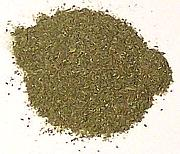

 |
Italian SeasoningNorth American | ||||
| Makes: Effort: Sched: DoAhead: |
2/3 cup * 15 min Yes |
"Italian Seasoning" is kind of undefined and wouldn't be used in Italy where specific regional seasoning mixes would prevail. | |||
| Fresh herbs are better when possible, but dried "Italian Seasoning" is called for in many North American recipes. Here's a version that's as good as any and better than most - especially supermarket versions - and it has enough stuff in it to cover all regions of Italy. | |||||
|
3 3 3 1 1 1 1 1/4 1/4 |
T T T t t T t t t |
Basil, dried Oregano, dried Parsley, dried Thyme, dried Rosemary, dried Garlic Powder Onion Powder Pepper, black Chili Flake (1) |
Make - (15 min)
|